Doğum tarixi:
10 aprel 1995-ci il
Doğum yeri:
Azərbaycan, Biləsuvar şəhəri.
Milliyəti:
Azərbaycanlı
Ailə vəziyyəti:
Evli
Təhsili:
Azərbaycan Dövlət Pedaqoji Universiteti
-Fakultə: Pedaqogika və psixologiya
-İxtisas: Korreksiyaedici təlim
COVID-19:
Aktivində var:
Keçmiş iş yeri:
"İdeal" Korreksiya və İnkişaf Mərkəzi
-Vəzifə: Loqoped/Psixoloq
-Müddət: 2 il.
Hal-hazırda iş yeri:
Azərbaycan Respublikası Fövqəladə Hallar Nazirliyinin Mülki Müdafiə Qoşunları
-Rütbə: Gizir
PEYVƏND SERTİFİKATI - VACCINATION CARD
Aktivində var:
1.“Bakı Gənclər Debat Forumu Payız-2013”ün qalibi;
2.“Gənc Sahibkarlar üçün dövlət xidmətləri” seminar və infoturunun iştirakçısı;
3.“Qladiator Debatları Kolizeyi” layihəsinin təlim iştirakçısı və Gladebatoru;
4.“Psixo-SOS” Forumu” layihəsinin iştirakçısı;
5."Bədənimiz danışır" adlı bədən dili seminar iştirakçısı;
6."Büdcənin idarə edilməsi" seminar iştirakçısı;
7.“Bakı Gənclər Debat Forumu-Yaz 2015”in ən yaxşı təşkilatçısı;
8.“Nitq İnkişaf Mərkəzi”ndə təcrübəçi;
9."Okul öncesi eğitim" təlim iştirakçısı.
2.“Gənc Sahibkarlar üçün dövlət xidmətləri” seminar və infoturunun iştirakçısı;
3.“Qladiator Debatları Kolizeyi” layihəsinin təlim iştirakçısı və Gladebatoru;
4.“Psixo-SOS” Forumu” layihəsinin iştirakçısı;
5."Bədənimiz danışır" adlı bədən dili seminar iştirakçısı;
6."Büdcənin idarə edilməsi" seminar iştirakçısı;
7.“Bakı Gənclər Debat Forumu-Yaz 2015”in ən yaxşı təşkilatçısı;
8.“Nitq İnkişaf Mərkəzi”ndə təcrübəçi;
9."Okul öncesi eğitim" təlim iştirakçısı.
Könüllülük fəaliyyəti:
1.“Vətəndaş Cəmiyyətində Debat” İctimai Birliyində project manager assistant;
2.“Azərbaycana Birgə Yardım Təşkilatı (UAFA)”nın Reabilitasiya Mərkəzində könüllü işçi.
1.“Vətəndaş Cəmiyyətində Debat” İctimai Birliyində project manager assistant;
2.“Azərbaycana Birgə Yardım Təşkilatı (UAFA)”nın Reabilitasiya Mərkəzində könüllü işçi.
Keçmiş iş yeri:
-Vəzifə: Loqoped/Psixoloq
-Müddət: 2 il.
Hal-hazırda iş yeri:
Azərbaycan Respublikası Fövqəladə Hallar Nazirliyinin Mülki Müdafiə Qoşunları
-Rütbə: Gizir
